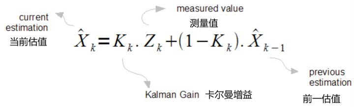
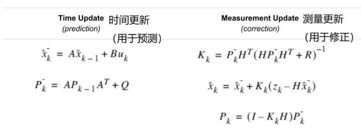
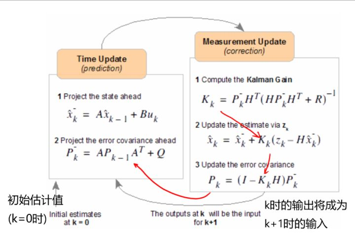

卡尔曼滤波入门
卡尔曼滤波（Kalman filter）是一种高效率的递归滤波器（自回归滤波器），它能够从一系列的不完全及包含噪声的测量中，估计动态系统的状态。卡尔曼滤波会根据各测量量在不同时间下的值，考虑各时间下的联合分布，再产生对未知变数的估计，因此会比只以单一测量量为基础的估计方式要准。卡尔曼滤波得名自主要贡献者之一的鲁道夫·卡尔曼。
卡尔曼滤波在技术领域有许多的应用。常见的有飞机及太空船的导引、导航及控制。卡尔曼滤波也广为使用在时间序列的分析中，例如信号处理及计量经济学中。卡尔曼滤波也是机器人运动规划及控制的重要主题之一，有时也包括在轨迹最佳化。卡尔曼滤波也用在中轴神经系统运动控制的建模中。因为从给与运动命令到收到感觉神经的回授之间有时间差，使用卡尔曼滤波有助于建立符合实际的系统，估计运动系统的目前状态，并且更新命令。
卡尔曼滤波原理解析
卡尔曼滤波器的状态矩阵方程如图1所示。

其中，下角标上的k是状态。此处我们将其视为离散时间间隔，比如说k=1 代表 1ms, k=2 代表2ms。
我们的目的是找到信号 $x$ 的估值 $\hat{x} $，并且希望能对所有的k值都能找到对应的估值。
另外此处的 $Z_k$ 是实际测量值，记住我们对该值并不完全信任，否则我们也不用费这么多事了。 $K_k$ 称为卡尔曼增益（也是最重要的量）， $\hat{x}_k$ 是前一状态下的信号估值。
现在我们有了测量值，前一状态的信号估值。该方程中唯一未知的量就是卡尔曼增益 $K_k$ 了。对于每个状态，我们都需要计算对应的。这事不简单，但好在我们有所需的计算工具。
另一方面，假设 $K_k$ 等于0.5，我们会发现该式变成了一个简单的求平均值公式。换句话说，随着状态的变化，我们的 $K_k$ 值将越来越“聪明”。
卡尔曼滤波器的构造
建立模型
此步最为关键，你必须确保卡尔曼滤波器适用于你要解决的问题。
卡尔曼滤波器的两个方程如下:
$$x_k=Ax_{k-1}+Bu_k+w_{k-1} \tag{1}$$
$$z_k=Hx_k+v_k \tag{2}$$
式(1)表达的是每个 $x_k$ 都可以通过一个线性随机方程估计出来。任意 $x_k$ 都是其前一时刻的值与过程噪音的线性组合（这个很难概念化）。请记住，大部分情况下该式没有控制信号 $u_k$ 项。
式(2)告诉我们任何测量值 $z_k$ （无法确定精确与否的测量值）都是信号值与测量噪声的线性组合。这两个分量符合高斯分布。
过程噪声与测量噪声互相统计独立。
$A, B, H$ 是一般形式的矩阵。但在大多数信号处理问题中，这些量仅为数值。而且虽然这些值在状态变换时会改变，大多数情况下我们都可以假设他们为定值。
如果我们十分确定我们的系统符合此模型，那么唯一剩下要做的事就是估计噪音函数 $w_{k-1}$ 和 $v_k$ 的平均值以及标准差。我们知道，在实际生活中没有信号满足高斯分布，但我们可以近似其为高斯分布。
该近似问题不大，因为我们将看到卡尔曼滤波器算法会逐渐向正确的（噪音函数的）估计值收敛，即使高斯噪声参数估计不佳。
唯一需要记住的是：你估计出来的噪音参数越好（越接近实际），你估计的（输出真实值）就越好。
开始卡尔曼滤波
如果你的模型适用于卡尔曼滤波器，那么接下来的步骤就是决定一些必要的参数以及初始值。
卡尔曼滤波器包含的方程可分为两个方程集：时间更新方程组（用于预测）以及测量更新方程组（用于修正）。这两个方程组在滤波器运行的每一步（每个状态）下都会执行，如图2所示。

建模部分已经在步骤一完成了，所以矩阵A，B和H已知。这些矩阵很可能是一个常数，而且大部分情况下会等于1。
剩下的最让人难受的部分就是决定R和Q的值了。R的值还是很容易找的，因为一般情况下我们对环境中的噪音还是能够确认的。（起码能用仪器测一下）。但是找Q的值就没那么直观了。
为了使滤波器能够运行，我们需要知道 $x_0$ 和 $P_0$ 的估计值。
迭代
在获得了滤波器运行所需的所有信息后，我们就可以估值迭代了。记住：前一状态的估值将成为当前状态的输入。

此处 $\hat{x}_k^-$ 是预估值，从某种角度来说是第二部分运行前对 x 的一个粗略估计值。
同时 $P_k^-$ 叫做预估误差协方差。在第二步“测量更新”中我们将会用到这两个预估值。
$\hat{x}_k$为在时间 k 时的 x 的估计值。（也是我们最想获得的值）。同时，我们得到了用于k+1时刻计算的 $P_k$ 值。
下一次迭代不会用到我们求得的卡尔曼增益 $K_k$ 的值，该值隐藏而神秘，并且是这些方程集的最重要的部分。
我们在第二步“测量更新”中求得的值也叫做后部值(posterior values)。这个名称也很说得通。
卡尔曼滤波器的应用示例
参考链接
- 卡尔曼滤波：从入门到精通,by David LEE.
- 傻瓜也能懂的卡尔曼滤波器（翻译自外网博客）,by 彦鑫.
- 说说卡尔曼滤波,by 李阳.
- 卡尔曼滤波,by wikipedia.
- 图说卡尔曼滤波，一份通俗易懂的教程,by 论智.
- 时间序列基本概念、任务、预测方法,by 带你聊技术.